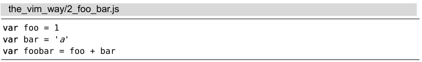
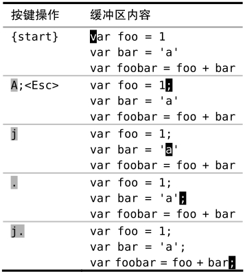

技巧2不要自我重复
对于在行尾添加内容这样的常见操作，如添加分号，Vim提供了一个专门的命令，可以把两步操作合并为一步。
假设有如下的JavaScript程序片段：

我们想在每行的结尾添加一个分号。要实现这一点，先得把光标移到行尾，然后切换到插入模式进行修改。$ 命令可以完成移动动作，接着就可以执行 a;<Esc> 完成修改了。
要完成全部修改，我们也可以对下面两行做完全相同的操作，不过那样做会错过这里将要提到的小窍门。由于 . 命令可以重复上次的修改，因此我们不必重复之前的操作，而是执行两次 j$.。一个键（.）顶3个（a;<Esc>），虽然每次省的并不多，不过在重复操作时，累积效应可不小。
不过让我们再仔细审视一下这个操作模式：j$.。j 命令使光标下移一行，而 $ 命令把光标移到行尾。我们用了两下按键，仅仅是为了把光标移到指定位置，以便可以用 . 命令。你觉得还有改进的余地吗？
减少无关的移动
a 命令在当前光标之后添加内容，而 A 命令则在当前行的结尾添加内容。不管光标当前处于什么位置，输入 A 都会进入插入模式，并把光标移到行尾。换句话说，它把 $a 封装成了一个按键操作。在本技巧后的一箭双雕部分中，我们将会看到Vim提供了不少这样的复合命令。
下面是对之前的例子的改进：

我们通过用 A 来代替 $a，大大提升了 . 命令的效率。我们不必再把光标移到行尾，只需保证它位于该行内就行了（可在任意位置）。现在我们可以重复执行足够多次的 j. ，完成对后续行的修改。
一键移动，另一键操作，真是太完美了！请留意这种应用模式，因为我们即将在更多的例子中看到它的身影。
虽然这一模式对这个简短的例子来说很好用，但它不是万能的。试想一下，如果我们不得不给连续50行添加分号，即便每个修改输一次 j. ，看起来也是一项很繁重的工作。跳到技巧30可以看到另外一种解决方法。
一箭双雕
我们可以这样说，A 命令把两个动作（$a）合并成了一次按键。不过它不是唯一一个这样的命令，很多Vim的单键命令都可以被看成两个或多个其他命令的组合。下表列出了类似的一些例子，你能找出它们之间别的共同点吗？
| 复合命令 | 等效的长命令 |
| C | c$ |
| s | cl |
| S | ^c |
| I | ^i |
| A | $a |
| o | A<CR> |
| O | ko |
如果你发觉自己正在输入 ko（或更糟糕，在用 k$a<CR>），马上打住！想想你在干什么，然后你就会意识到可以把它换成O 命令。
你找出这些命令别的共同点了吗？它们全都会从普通模式切换到插入模式。仔细想想这一点，并想想这对 . 命令可能产生怎样的影响。